{Netopia
Monitor Vers 1.0.0}
(c).
Copyright 1990-2001 HAL Smalltalker, Inc.
User's Manual
Tribes2 Netopia Monitor Vers 1.0.0 is a GUI-driven utility program that allows the user to monitor up to 4 game servers to collect certain statistics about each server such as the numbers of Players Allowed, the number of BOTs allowed and the numbers of Players actually connected as well as how full the servers are as a group based on the numbers of Players connected out of the total Allowed.
Tribes2 Netopia Monitor Vers 1.0.0 can monitor the following types of game servers:
Step #1: Installation
Install Tribes2 Netopia Monitor Vers 1.0.0 in a folder named c:\Tribes2-Netopia-Monitor\ or something similar. Just be sure the folder name you use does NOT contain any special characters or spaces otherwise you may encounter errant program behaviors.
Step #2: Running Tribes2 Netopia Monitor Vers 1.0.0
| 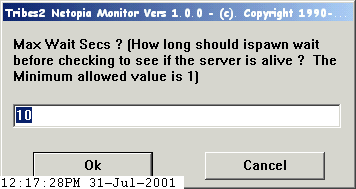Max wait seconds - this specifies how long Tribes2 Netopia Monitor Vers 1.0.0 should wait between polling the specified servers to collect stats. Typically 10 secs is a reasonable time to wait. Click OK to accept the value that appears in the edit field or click CANCEL to quit the program. |
| 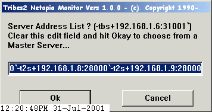
Server Address List - this specifies the IP address(es) and Port Number(s)
Tribes2 Netopia Monitor Vers 1.0.0 should use when polling server(s) to collect
stats. Specify a Tribes1 server using the format of: -tbs+192.168.1.6:31001`
where -tbs is the QStat flag for a Tribes1 Server, 192.168.1.6:31001 is the
IP Address and Port Number for a Tribes1 Server and (`) is the separator that
allows another server to be added to the list. Specify a Tribes2 Server using
the format of: -t2s+192.168.1.2:28000`where -t2s is the QStat flag for a Tribes2
Server, 192.168.1.2:28000 is the IP Address and Port Number for a Tribes2 Server
and (`) is the separator that allows another server to be added to the list.
You may specify as many as 4 servers in this manner using the standard identifiers
found in the QStat-ReadMe text file. Click OK to accept the value that appears
in the edit field or click CANCEL to quit the program. |
| 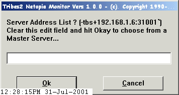 Alternatively you may clear this server list to cause the Tribes2 Netopia Monitor Vers 1.0.0 to collect a list of game servers from a suitable Master Server. See the documentation for your game to determine the Master Server Address. Click OK at this point to accept the value that appears in the edit field or click CANCEL to quit the program. |
| 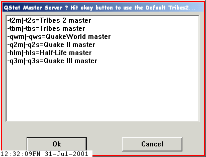 Select the type of Master Server you want to use - Tribes2 Netopia Monitor Vers 1.0.0 can query from a side variety of Master Servers as you can see in the list. Choose an item and click OK to accept the highlighted Master Server or click CANCEL to quit the program. |
| 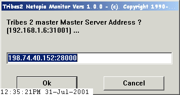 Game Server Master Server Address - this specifies the IP address and Port Number for the Master Server Tribes2 Netopia Monitor Vers 1.0.0 will use to query for the list of available game servers. Click OK to accept the value that appears in the edit field or click CANCEL to quit the program. |
| 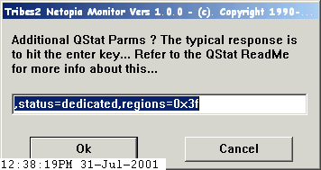 Additional QStat Parms - this allows the user to specify some possibly required additional QStat Parms Tribes2 Netopia Monitor Vers 1.0.0 should use to query for the list of available game servers. Refer to the QStat-ReadMe text file for more detailed information about what these parms might be for your specific uses. Click OK to accept the value that appears in the edit field or click CANCEL to quit the program. |
| 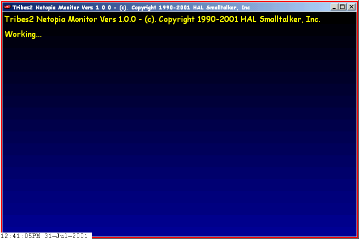 Working... - this tells the user Tribes2 Netopia Monitor Vers 1.0.0 is working to query for the list of available game servers using the specified QStat parms. In case the specified Master Server is either unavailable or there is no available list of game servers the user will be prompted for the Master Server Address again and again until a list of servers can be queried or the user clicks the Cancel button to stop the madness. |
| 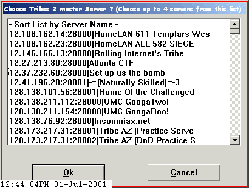 Choose up to 4 Game Servers from the list or choose the Sort by Server Name or Sort by Server IP to resort the list - Tribes2 Netopia Monitor Vers 1.0.0 will ignore any servers selected beyond the initial 4 it detects from those highlighted from the list. Click OK to accept the selected servers that appears in the listbox or click CANCEL to quit the program. |
| 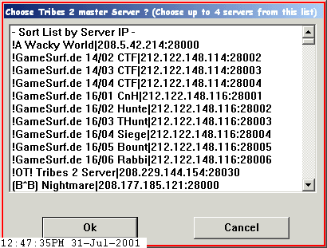 Yup, you can resort the list by Server Name to make it easier to choose the desired servers from the list. Click OK to accept the selected servers that appears in the listbox or click CANCEL to quit the program. |
| 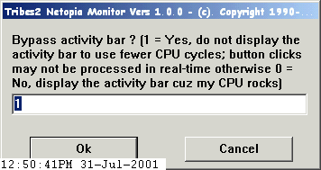 Wanna watch Tribes2 Netopia Monitor Vers 1.0.0 display an animated activity bar whenever it's not doing anything then enter a 0 otherwise enter a 1. Click OK to accept the value that appears in the edit field or click CANCEL to quit the program. |
| 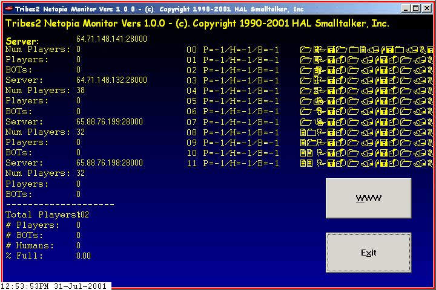This is the COOL display you will see after Tribes2 Netopia Monitor Vers 1.0.0 has run the initial game server query ! Notice the garbage looking characters on the right of the window - this is normal albeit perhaps annoying. Very soon this garbage will be replaced by the next display. |
| 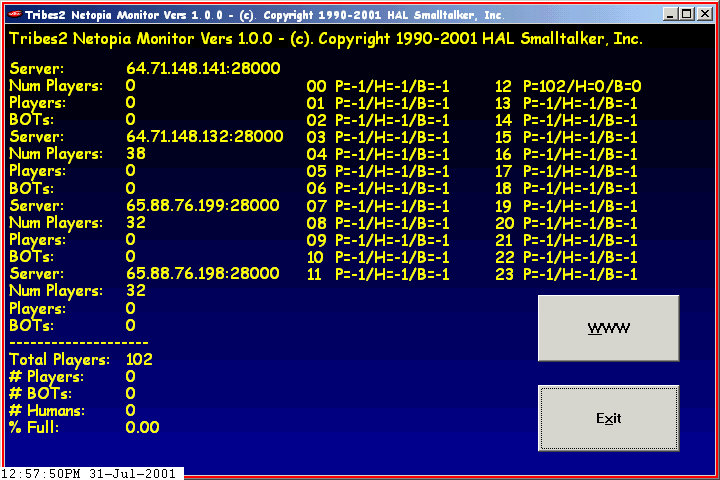 This is the COOL display you will see after Tribes2 Netopia Monitor Vers 1.0.0 has been running for a while. |
One last item, Tribes2 Netopia Monitor Vers 1.0.0 will save a log file every night at 12a so you will have a history of what your 4 favorite game servers have been doing every hour of the day.
Enjoy !
This site was updated on August-03-2001 16:20 PST
Press
/ News Config
Util Windows Stay
Mayhem
Mod Screenshots
Download
Notes
Items
Scripts
Mayhem Mod
by {USB}Spiderman + {USB}|Hypn0tik|,
Website by TerroX [4o4]
Copyright 2001
Mayhem Website http://tribes2.rocks.it/